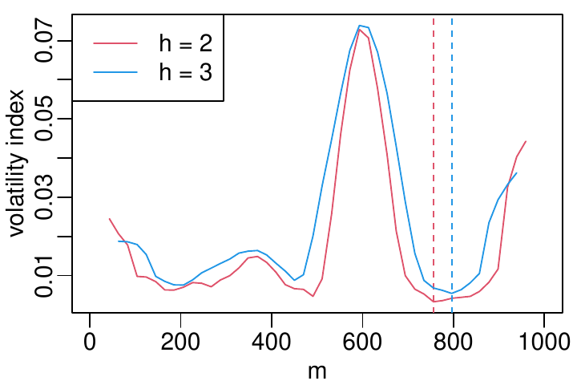
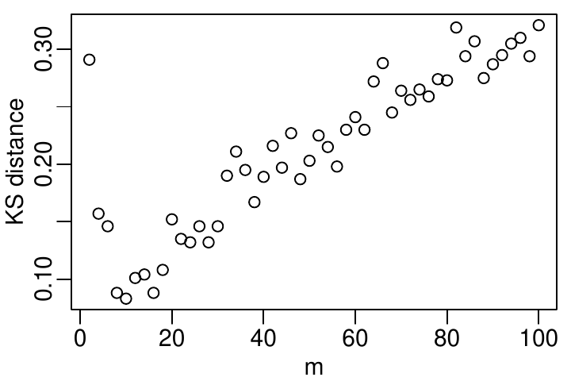
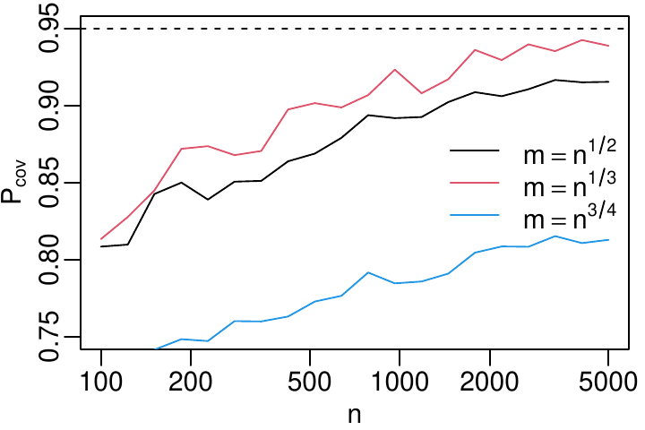
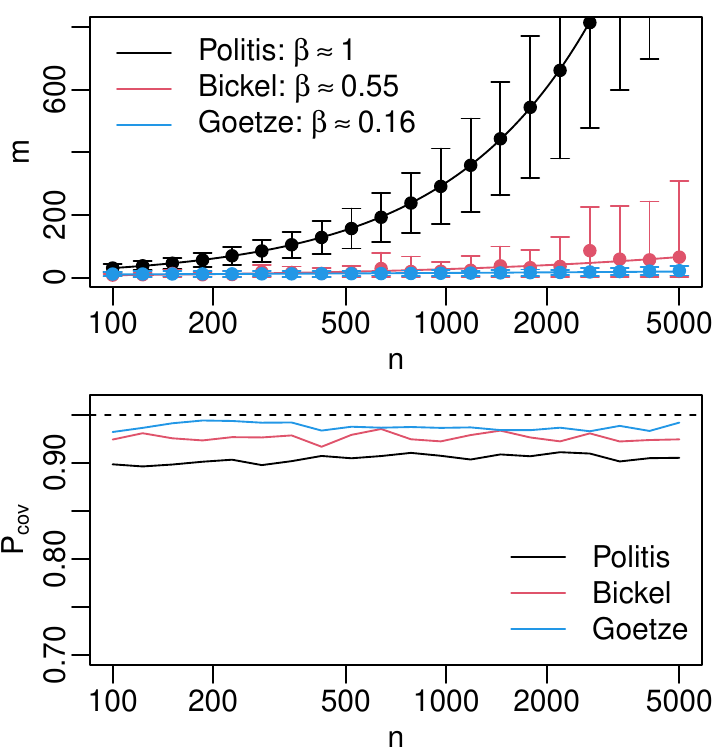
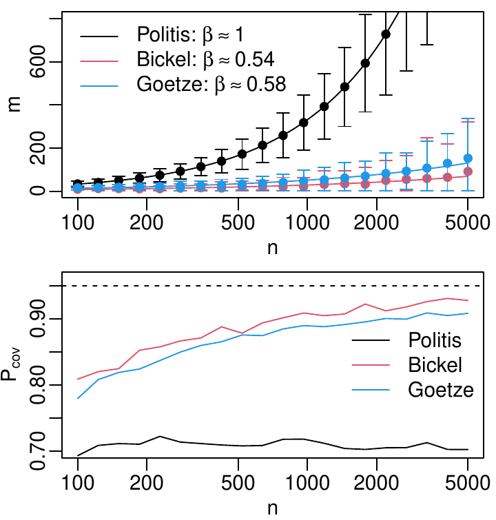
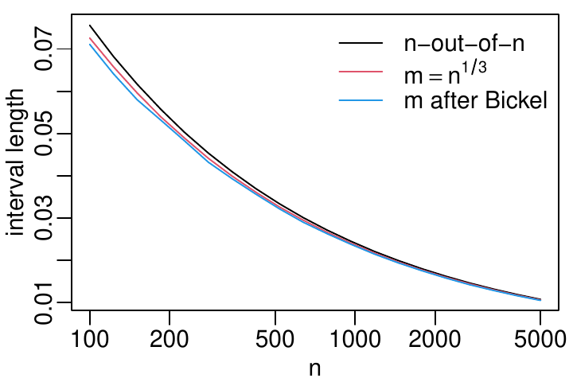

1 Introduction
The bootstrap is a resampling method introduced by Efron (1979), which
repeatedly simulates samples of the same size \(n\) as the observed data
by \(n\)-fold drawing with replacement. Let us call this method the
n-out-of-n bootstrap, in order to distinguish it from different sampling
schemes. For each of these samples, the estimator \(T\) of interest is
computed, thereby simulating a sample \(T_1^*, \ldots, T_R^*\) for the
distribution of \(T\), where \(R\) is the number of bootstrap repetitions.
For sufficiently smooth estimators \(T\), this bootstrap distribution
asymptotically approaches the true distribution of \(T\)
(Giné and Zinn 1990; Shao and Tu 1995), and it can thus be used to construct
confidence intervals for \(T\). The coverage probability of confidence
intervals based on flipping the quantiles of the bootstrapped
distribution \(T_1^*, \ldots, T_R^*\) at the point estimate (“basic
bootstrap”) can be shown to be first order accurate, i.e. up to
\(O(n^{-1/2})\). Under certain conditions, it is even possible to make the
confidence intervals second order accurate, i.e. up to \(O(n^{-1})\), by
studentized sampling (“bootstrap-\(t\)”) or accelerated bias correction
(“\(BC_a\) bootstrap”) (Hall 1988; DiCiccio and Efron 1996; Davison and Hinkley 1997).
Compared to other methods for estimating confidence intervals, the
bootstrap is more versatile because it neither relies on a likelihood
function, nor does it require asymptotic normality. The bootstrap has
thus become a standard technique for estimating confidence intervals,
and it is even included in vanilla R with the package boot
(R:boot?), which implements five different methods in boot.ci().
There are, however, bootstrap inconsistent estimators, i.e., estimators
for which the n-out-of-n bootstrap fails to yield confidence intervals
with an asymptotically correct coverage probability. Examples include
extreme order statistics (Bickel et al. 1997), the Grenander estimator of a
monotonous density (Sen et al. 2010), Chernoff’s estimator of the mode and
Tukey’s shorth (Léger and MacGibbon 2006), or Chatterjee’s rank correlation index
(Dalitz et al. 2024; Lin and Han 2024). See the discussion by Lin and Han (2024) for a
literature review and further examples. A possible workaround in these
cases is the m-out-of-n bootstrap, which samples only \(m<n\)
observations. This can be done with or without replacement.
Politis and Romano (1994), who introduced this method, only considered sampling
without replacement, which they called subsampling. They have shown that
the m-out-of-n bootstrap without replacement works under much weaker
conditions than the n-out-of-n bootstrap, provided \(m\) is chosen such
that, for \(n\to\infty\), \(m\to\infty\) and \(m/n\to 0\). The only condition
is that the estimator, suitably scaled by some factor \(\tau_n\),
possesses a limit distribution, whereas no smoothness of the estimator
or uniformity of the convergence are required. If the sampling is
instead done with replacement, (Bickel et al. 1997) have shown that a similar
result requires additional restrictions on the estimator. Sampling
without replacement thus works under weaker conditions than sampling
with replacement, and, in the present article, we therefore only
consider sampling without replacement. Our package
moonboot1 supports
sampling both with and without replacement by means of an argument
replace, which is set to FALSE by default.
The wider applicability of the m-out-of-n bootstrap comes at a price, though. One drawback is that the scaling factor \(\tau_n\) must be known. Bertail et al. (1999) explained that it must be chosen such that \(\tau_n^2 \operatorname{Var}(T)\) converges to some constant, and they also suggested a method to estimate the scaling factor with another bootstrap. For root-\(n\) consistent estimators, it is \(\tau_n=\sqrt{n}\), but not all estimators are root-\(n\) consistent, especially if they are bootstrap inconsistent, and even if root-\(n\) consistency is conjectured it can be difficult to prove (Lin and Han 2024). Moreover, the m-out-of-n bootstrap can have less than first order accuracy: Politis and Romano (1994) gave a theoretical example with accuracy \(O(n^{-1/3})\) for an optimal choice of \(m\), and even worse for other choices of \(m\). That the accuracy depends on the choice of \(m\) was demonstrated, too, in a simulation study by Kleiner et al. (2014). And for the sample quantiles and sampling with replacement, Arcones (2003) has shown that the choice \(m\propto n^{2/3}\) is optimal. This raises the problem of how to choose \(m\), and several heuristics have been suggested in the literature (Politis et al. 1999; Chung and Lee 2001; Götze and Račkauskas 2001; Bickel and Sakov 2008; Lee and Yang 2020).
Due to these shortcomings, the usual n-out-of-n bootstrap is generally preferable for bootstrap consistent estimators. However, there are bootstrap inconsistent estimators and there is thus need for an R package that facilitates the application of the m-out-of-n bootstrap by providing the required functions. To this end, we present a new package moonboot, evaluate the algorithms implemented therein by means of Monte Carlo simulations, and give recommendations and use cases for their application. The name of the package was inspired by an article by Götze and Račkauskas (2001), who abbreviated the m-out-of-n bootstrap as “moon bootstrap”.
2 The m-out-of-n bootstrap
Let \(X_1,\ldots,X_n\) be i.i.d. random variables, \(\theta\) be some parameter of their underlying distribution, and \(T_n=T_n(X_1,\ldots,X_n)\) be an estimator for \(\theta\). Let us additionally assume2 that \(E(T_n^2)<\infty\). The m-out-of-n bootstrap requires that, for some scaling factor \(\tau_n\) which behaves for \(n\to\infty\) as \[\label{eq:tau} \frac{\tau_{m(n)}}{\tau_n} \to 0 \quad for \quad m(n)\to\infty \quad with \quad \frac{m(n)}{n}\to 0, \tag{1}\] the estimator converges in distribution to some limit law when centered around the true parameter \(\theta\) and scaled with \(\tau_n\): \[\label{eq:tscaled} S_n = \tau_n (T_n - \theta) \;\stackrel{n\to\infty}{\longrightarrow}\; S \; in distribution \tag{2}\] Note that condition ((1)) implies that \(\tau_n\to\infty\), and thus the convergence ((2)) requires that \(T_n\) converges to \(\theta\) in probability (in other words: \(T_n\) must be consistent), because it follows from ((2)) that \[P(|T_n-\theta|>\varepsilon) = F_n(-\tau_n\varepsilon)+(1-F_n(\tau_n\varepsilon)) \;\stackrel{n\to\infty}{\longrightarrow}\; 0\] where \(F_n\) is the cumulative distribution function of \(S_n\). Moreover, if additionally the second moment of \(S_n\) converges to some constant, the scaling factor \(\tau_n\) is related to the rate of decrease of the variance of \(T_n\): \[\label{eq:vartn} V = \lim_{n\to\infty} \operatorname{Var}(S_n) = \lim_{n\to\infty} \operatorname{Var}(\tau_n T_n) \quad\Rightarrow\quad \operatorname{Var}(T_n) \sim \frac{V}{\tau_n^2} \quad for\quad n\to\infty \tag{3}\] This relationship allows one to determine \(\tau_n\) theoretically by means of an analytical calculation, or to estimate it by means of Monte Carlo simulations.
Politis and Romano (1994) have shown that, under the assumptions ((2))
and ((1)), a confidence interval with asymptotic coverage
probability \((1-\alpha)\) can be constructed as
\[\label{eq:ci-m-out-of-n}
\left[ T_n - \frac{q(1-\alpha/2)}{\tau_n},\; T_n - \frac{q(\alpha/2)}{\tau_n} \right] \tag{4}\]
where \(q(1-\alpha/2)\) and \(q(\alpha/2)\) are the quantiles of the scaled
bootstrap distribution \(\tau_m(T_m^* - T_n)\), where \(T_m^*\) denotes the
bootstrap samples obtained by \(m\)-fold drawing without replacement. In
moonboot, this interval is implemented by
mboot.ci(..., method="politis").
If the variance of \(S_n\) converges to some value \(\sigma^2\) and the
limiting distribution of \(S\) is the normal distribution with standard
deviation \(\sigma\), then the m-out-of-n bootstrap can alternatively be
used to estimate the variance \(\sigma^2\) and compute the standard
confidence interval
\[\label{eq:ci-norm}
T_n \pm z_{1-\alpha/2}\,\hat{\sigma}_m^* \quad with\quad \hat{\sigma}_m^* = \frac{\tau_m}{\tau_n}\sqrt{\operatorname{Var}(T_m^*)} \tag{5}\]
In moonboot, this is implemented by mboot.ci(..., method="norm").
Although this interval is only reasonable for asymptotically normal
estimators, its coverage probability can have a faster convergence to
the nominal value than the interval ((4)) provided
asymptotic normality indeed holds (Dalitz et al. 2024).
Sherman and Carlstein (2004) observed that the scaling with \(\tau_m/\tau_n\) in
((4)) can be omitted if the interval is centered
around one of the \(T_m\) instead of \(T_n\). They suggested using the first
\(m\) samples for computing \(T_m\), but this is an arbitrary choice and
thus even the location of the confidence interval is not uniquely
determined by the data. Moreover, the lack of scaling increases the
interval length. The greater length is compensated by the higher
volatility of the location so that the coverage probability still is
close to the nominal value. This does not hold, however, for drawing
without replacement as \(m\) approaches \(n\), and a compromise must be made
between small interval length and approximate coverage probability.
Sherman and Carlstein (2004) suggested a heuristic method for choosing \(m\) on the basis
of a double bootstrap, and they gave the rule of thumb to choose \(m\)
between \(n^{1/2}\) and \(n^{2/3}\). However, due to the greater interval
length, this method should only be used as a last resort if the
convergence rate \(\tau_n\) is unknown and cannot be estimated from the
data. In moonboot, this method is implemented by
mboot.ci(..., method="sherman") and the method for estimating \(m\) by
estimate.m.sherman().
Estimation of \(\tau_n\)
According to Eq. ((3)), the formula for the scaling factor \(\tau_n\) can be determined by an analytic investigation of \(\operatorname{Var}(T_n)\), which can not only be difficult for some estimators, but it requires an ad hoc study of the specific estimator \(T_n\) under consideration. This thwarts the application of the m-out-of-n bootstrap out-of-the-box.
Fortunately, the relationship ((3)) makes it possible to estimate \(\tau_n\) by another bootstrap (Bertail et al. 1999). If the variance \(V_m=\operatorname{Var}(T_m^*)\) is estimated by sampling with different subsampling sizes \(m\) and \(\tau_n\) is assumed to be of the form \(\tau_n=n^\beta\), then the asymptotic relationship ((3)) becomes \[\label{eq:bertail} \log V_m \approx -2\beta\log m + \log V \tag{6}\] and \(\beta\) can be estimated with a least-squares fit. For the choice of the test values \(m\), Bertail et al. (1999) suggested \(m_i=n^{\gamma_i}\), but wrote that “the difficult problem of choosing the \(\gamma_i\)’s requires more work on a case-by-case basis”3. This casts doubt on the whole method, because removing the necessity of a detailed asymptotic analysis of the estimator is the whole point of estimating \(\tau_n\) from the data. Indeed, we have not found a sequence of values for the \(\gamma_i\) that worked equally well in all of our examples. We thus leave the choice of the \(\gamma\)-sequence as an option to the user and use the default of five values between \(0.2\) and \(0.7\), which worked reasonably well for some of our estimators.
(Bertail et al. 1999) suggested the alternative of using quantiles instead of the variance, but as the method involves taking logarithms, this makes no sense when the estimator tends to be negative or close to zero. As a workaround, (Politis et al. 1999) suggested replacing \(V_m\) in Eq. ((6)) with the average of quantile ranges \[Q_m = \frac{1}{J}\sum_{j=1}^J \left( \operatorname{quantile}(T_m^*, \alpha^{high}_j) - \operatorname{quantile}(T_m^*, \alpha^{low}_j) \right)\] We have implemented this, too, with the choice \(\alpha^{high}_j=0.75+j\cdot 0.05\) and \(\alpha^{low}_j=0.25-j\cdot 0.05\) for \(j=0,\ldots,4\), but the results in section 4.1 show that this makes almost no difference in comparison to using the variance.
This method is implemented in moonboot by estimate.tau(), which is
automatically called by mboot.ci() when no rate for the parameter
tau is provided.

|
 |
|
|
Choice of \(m\)
According to Politis and Romano (1994), the m-out-of-n bootstrap asymptotically works for any choice of \(m\) satisfying \(m\to\infty\) and \(m/n\to 0\) as \(n\to\infty\). This, however, leaves a wide range of choices, e.g. \(m=cn^\beta\) for any \(\beta\in (0,1)\), and the simulations in section 4 show that the convergence rate of the coverage probability depends on the choice of \(m\). It might thus be desirable to choose \(m\) in a data-dependent way, for which different methods have been suggested in the literature (Politis et al. 1999; Chung and Lee 2001; Götze and Račkauskas 2001; Bickel and Sakov 2008; Lee and Yang 2020).
Politis et al. (1999, ch. 9.3.2) suggested a minimum volatility method for estimating \(m\), which is based on the idea that there should be some range for \(m\) where its choice has little effect on the estimated confidence interval endpoints. The optimal \(m\) is that with the lowest “volatility” of the confidence interval, which is defined as the running standard deviation of the interval endpoints around each specific choice for \(m\). Before computing the standard deviation, the interval endpoints should be smoothed out, too, by averaging over the endpoints computed for the neighboring choices for \(m\).
The algorithm has two parameters, the window width \(h_{ci}\) for
smoothing the interval end points and the window width \(h_\sigma\) for
computing the running standard deviation. Politis et al. (1999) recommended
\(h_{ci}=h_\sigma=2\) or \(3\), which corresponds to a range of \(5\) or \(7\)
values. To avoid finding a minimum that is too close to \(n\), as happens
in Fig. 1b, we have restricted the search range to
values \(m<n/2\). For efficiency reasons, Politis et al. (1999) recommended not to
try every \(m\), but only a grid of equidistant values. Our implementation
in the function estimate.m.volatility() in the package moonboot
therefore only tries out a maximum of 50 values for \(m\).
The methods by Götze and Račkauskas (2001) and Bickel and Sakov (2008) are both based on
minimizing the distance between the distributions of \(S_m^*\) and
\(S_{m'}^*\) for different choices \(m\) and \(m'\) of the subsampling size.
As a distance measure, both articles utilized the Kolmogorov distance,
i.e., the maximum distance between the cumulative distribution
functions. The methods differ in the values that are tried out for \(m\)
and \(m'\): Götze and Račkauskas (2001) suggested searching the minimum among all values
for \(m\) and \(m/2\), whereas Bickel and Sakov (2008) searched the minimum distance
between \(m_j\) and \(m_{j+1}\) for \(m_j=\lceil q^j n\rceil\), with the
recommendation to set \(q=0.75\). These methods are provided by
moonboot as estimate.m(..., method="goetze") and
estimate.m(..., method="bickel"), respectively.
|  |

|
|
|
Trying out all combinations of \(m\) and \(m/2\), as suggested by Götze and Račkauskas (2001), has a runtime of order \(O(Rn^2)\), and it would thus be preferable to use a more efficient minimum search like, e.g., a Golden Section Search (Press et al. 1992). Such algorithms, however, are devised for deterministic functions, not for random functions. As can be seen in Fig. 2, the Kolmogorov distance \(d(m,m/2)\) between two randomly sampled distributions scatters considerably and this is only somewhat remedied by repeated sampling. This means that even the usual initial bracketing process by going downhill with increasing step size is unreliable when sampling from specific data, even if, on average, the function actually has a non-boundary minimum4. We therefore stuck to the original suggestion by Götze and Račkauskas (2001) and have implemented an exhaustive search over all even values for \(m\).
Two other methods have been suggested in the literature, which we have not included in moonboot. Chung and Lee (2001) based their method on the assumptions of root-n consistency and asymptotic normality of the estimator. Although the assumption of root-n consistency might be overcome by replacing factors \(n^{1/2}\) with \(\tau_n\) in the formulas, the normality assumption is essential for that method because it is based on an Edgeworth expansion. In our tests with non-normal estimators, the coverage probabilities were very low and did not even converge to the nominal value for large \(n\). Lee and Yang (2020) suggested using a double bootstrap for estimating the coverage probability for different values of \(m\) and to choose the \(m\) where this estimate is close to the nominal value. In our experiments, however, the estimated coverage probability based on an in-sample bootstrap was either way too low or almost one and thus rarely close to the nominal value. For xicor, this behavior was not even monotone in \(m\), which made the method difficult to apply. Moreover, it has a runtime complexity of \(O(R^2 n^2)\), which made Monte Carlo simulations for its evaluation infeasible.
Functions provided by moonboot
Like in the boot package, the computation of the confidence interval is split into two steps: the sampling procedure for simulating the bootstrap distribution \(T_m^*\), and the computation of the confidence interval therefrom. Using the same interface makes it easy for a user to switch between boot and moonboot. Moreover, this interface is very flexible because it allows for statistics defined on complicated data structures for which only the user knows how to do the sub-indexing. The interface consists of the following two functions:
mboot(data, statistic, m, R=1000, replace=FALSE, ...)-
Simulates the bootstrap distribution of the given estimator statistic, which must have been defined as a function with two arguments:statistic(data, indices). For multidimensional data, each row in data is assumed to be one data point. Additional arguments are passed to statistic. mboot.ci(boot, conf=0.95, tau=NULL, type=c("all", "basic", "norm"))-
Estimates the confidence interval with Eqs. ((4)) (“basic”) or ((5)) (“norm”). tau must be a function that computes \(\tau_n\) from its argument \(n\). If it is not provided, it is estimated withestimate.tau()with the default settings of this function. According to the results in Section 4.1, this is not recommended, though, and it is preferable to provide the correct value for tau.
Calling these functions requires knowledge of the scaling factor \(\tau_n\) and a choice for the subsample size \(m\). For the cases that \(\tau_n\) is not known or that \(m\) shall be chosen in a data-based way, two other functions are provided:
estimate.tau(data, statistic, R=1000, replace=FALSE, min.m=3,
gamma=seq(0.2, 0.7, length.out=5), method="variance", ...)
:
Estimates the scaling factor with the method by Bertail et al. (1999). The
values for \(m\) are tried out as \(m_i=n^{\gamma_i}\). min.m is the
minimum sample size for which the statistic makes sense and can be
computed. The estimation is based on the scaling behavior of the
variance (method="variance") or of the quantile ranges
(method="quantile").
estimate.m(data, statistic, tau, R=1000, replace=FALSE, min.m=3,
method="bickel", params=NULL, ...)
:
Estimates \(m\) with the method by (Bickel and Sakov 2008) (method="bickel"),
the method by Götze and Račkauskas (2001) (method="goetze"), or with the
volatility index (method="politis"). params is a list that can
be used to pass additional parameters for the underlying method,
e.g. params=list(q=0.75) for the method by (Bickel and Sakov 2008). min.m
is the minimum sample size for which the statistic makes sense and
can be computed.
Typical usage
Let us assume that you want to estimate a confidence interval for an
estimator my.stat on the basis of some data x. Then you must first
define a wrapper function that computes my.stat only for the data
selected according to the provided indices:
boot.stat <- function(dat, indices) {
my.stat(dat[indices])
}Without any knowledge about the asymptotic properties of my.stat, you
can estimate a 95% confidence interval with:
boot.out <- mboot(x, boot.stat, m=sqrt(NROW(x)))
ci <- mboot.ci(boot.out, type="basic")
print(ci)Beware that this automatically estimates the asymptotic convergence rate
\(1/\tau_n^2\) of the variance of my.stat with the method by
Bertail et al. (1999). It is thus better to provide this rate in the parameter
tau, if you happen to know it. For a root-n consistent estimator,
e.g., it is \(\tau_n=\sqrt{n}\) and you can call mboot.ci() as
follows5:
ci <- mboot.ci(boot.out, tau=function(n) { n^0.5 }, type="basic")3 Examples
| estimator \(\hat{\theta}\) | data model | true \(\theta\) | \(\tau_n\) |
|---|---|---|---|
max(x) |
\(x_i\sim\operatorname{unif}(0,1)\) | \(1\) | \(n\) |
moonboot::shorth(x) |
\(x_i\sim \operatorname{norm}(0,1)\) | \(0\) | \(n^{1/3}\) |
XICOR::xicor(x,y) |
\(x_i\sim\operatorname{unif}(-1,1)\), \(y_i\sim x_i+ \mathcal{N}(0,0.5)\) | \(0.3818147\) | \(\sqrt{n}\) |
mean(x) |
\(x_i\sim\operatorname{power(2,0,1)}\) | \(3/4\) | \(\sqrt{n}\) |
In order to evaluate the implemented methods, we applied them to four different estimators, three of which were bootstrap inconsistent. A summary can be found in Tbl. 1, and the detailed description follows. \(x_1,\ldots,x_n\) denote the i.i.d. sample values drawn from the given distributions.
Maximum of a uniform distribution (max).
The maximum likelihood estimator for the upper bound of a uniform distribution between zero and \(\theta\) is \(\hat{\theta}=\max\{x_1,\ldots,x_n\}\). This estimator was already given by Bickel et al. (1997) as an example of a bootstrap inconsistent estimator. It has the nice property that its probability density \(g(t)\) can be readily computed as \[\label{eq:max:dist} g(t) = \left\{\begin{array}{ll} n t^{n-1}\theta^{-n} & for 0\leq t\leq\theta \\ 0 & else \end{array}\right. \tag{7}\] This estimator is neither root-n consistent, nor asymptotically normal. The scaling factor \(\tau_n\) can be computed from Eq. ((7)) as \[\label{eq:max:tau} \operatorname{Var}(\hat{\theta}) = \theta^2\frac{n}{(n+2)(n+1)^2} \stackrel{n\to\infty}{\sim} \frac{\theta^2}{n^2} \quad\Rightarrow\quad \tau_n = n \tag{8}\]
Tukey’s Shorth (shorth).
This is the mean of the data points in the shortest interval that
contains half of the data. For symmetric distributions with a strongly
unimodal density, Andrews et al. (1972 50ff) has shown that this estimator
is cube root consistent, i.e., \(\tau_n=n^{1/3}\). Bootstrap inconsistency
of the shorth was mentioned by Léger and MacGibbon (2006). We have implemented this
estimator in moonboot as shorth() and applied it to normally
distributed data.
Chatterjee’s rank correlation (xicor).
This coefficient \(\xi_n\) was introduced by Chatterjee (2021) as an
estimator for an index \(\xi(X,Y)\) that is zero, if the two random
variables \(X\) and \(Y\) are independent, and one, if \(Y\) is a measurable
function of \(X\). For continuous \(X\) and \(Y\), this is an interesting
example of a root-n consistent estimator (Lin and Han 2022) that is bootstrap
inconsistent (Dalitz et al. 2024; Lin and Han 2024). We have used the implementation
xicor() from the package
XICOR (Chatterjee and Holmes 2023) to
compute \(\xi_n\), and the function given by Dalitz et al. (2024) to compute
\(\xi(X,Y)\) for the model \(X \sim Y + \varepsilon\), where \(\varepsilon\)
is normally distributed with zero mean and \(\sigma=0.5\). Note that we
have used the original definition of \(\xi_n\) by Chatterjee (2021), not
the bias reduced form suggested by Dalitz et al. (2024).
Mean of an unsymmetric distribution (mean).
The mean is a very well-behaved statistic: it is asymptotically normal,
root-n consistent and bootstrap consistent. It can thus serve as a
simple test case of how well the m-out-of-n bootstrap performs for
bootstrap consistent estimators. We have simulated data according to the
density \(f(x)=3x^2\) for \(x\in [0,1]\), which was already used in a study
by Dalitz (2017), and for which we have implemented the random number
generator rpower() in moonboot.
4 Results
For all four estimators, we have evaluated the methods for estimating \(\tau_n\) and the different choices for \(m\) in the m-out-of-n bootstrap without replacement by means of Monte Carlo simulations. We have computed confidence intervals with a nominal coverage probability \(P_{cov}\) of \(0.95\) and estimated the actual coverage probability by repeating the computation \(N=10^4\) times. This means that the accuracy (i.e. the width of a 95% confidence interval) of the estimated \(P_{cov}\) is about \(\pm 0.005\). Using a larger \(N\) would have made the simulation for the method by Goetze intractable. All simulations were done with \(R=1000\) bootstrap repetitions.
Estimation of \(\tau_n\)
| method | estimator | true \(\beta\) | \((\gamma_1,\gamma_5)\) | \(n\) | estimated \(\beta\) | \(n\) | estimated \(\beta\) |
|---|---|---|---|---|---|---|---|
| variance | mean | \(0.5\) | \(\mathbf{(0.2,0.5)}\) | 100 | 0.4723 | 500 | 0.4870 |
| \((0.4,0.8)\) | 0.5964 | 0.5480 | |||||
| max | \(1.0\) | \((0.2,0.5)\) | 0.6789 | 0.7730 | |||
| \(\mathbf{(0.4,0.8)}\) | 0.9595 | 1.0043 | |||||
| xicor | \(0.5\) | \((0.2,0.5)\) | 0.1821 | 0.2945 | |||
| \(\mathbf{(0.4,0.8)}\) | 0.4914 | 0.5052 | |||||
| quantile | mean | \(0.5\) | \(\mathbf{(0.2,0.5)}\) | 100 | 0.5394 | 500 | 0.5164 |
| range | \((0.4,0.8)\) | 0.6167 | 0.5600 | ||||
| max | \(1.0\) | \((0.2,0.5)\) | 0.8355 | 0.8722 | |||
| \(\mathbf{(0.4,0.8)}\) | 1.1068 | 1.0872 | |||||
| xicor | \(0.5\) | \((0.2,0.5)\) | 0.0332 | 0.2128 | |||
| \(\mathbf{(0.4,0.8)}\) | 0.4880 | 0.5171 |
|  |

|
| a. shorth | b. xicor |
Our simulations confirmed that the choice for the extreme values of the trial values \(m_i=n^{\gamma_i}\) for \(i=1,\ldots,5\) indeed influence the accuracy of the estimation of \(\tau_n\). For the mean estimator, e.g., we achieved the best results for \(\gamma_1=0.2\) and \(\gamma_5=0.5\), whereas this choice was poor for xicor and max (see Tbl. 2). The results for estimation by means of the variance or quantile ranges are similar. We thus conclude that it does not matter which method is used. The results for xicor, however, are a warning that the estimation of \(\tau_n\) with the method by (Bertail et al. 1999) can be grossly inaccurate, unless the range of the \(\gamma_i\) has been luckily guessed.
Choice of \(m\)
To see how the coverage probability depends on the choice of \(m\), we have first used the fixed formula \(m=n^\beta\) with different choices for \(\beta\). The results in Fig. 3 show that the coverage probability indeed depends on the choice of \(m\). Moreover, the optimal choice for \(\beta\) depends on the estimator: \(\beta=1/3\) was, e.g., a decent choice for shorth, but a poor choice for xicor.
|  |  |
| a. max | b. shorth |

|

|
| c. xicor | d. mean |
The results for the data based methods for choosing \(m\) are summarized in Fig. 4. The method by Politis et al. (1999) cannot be recommended, because the resulting coverage probability never approached the nominal value in our simulations. For the shorth, it was only about 0.7 even for high values of \(n\). For the other estimators, it was somewhat greater, but nevertheless too small. This behavior can be understood from the curves showing \(m(n)\) in Fig. 4: The method by Politis et al. (1999) always chooses an \(m\) proportional to \(n\), which means that the condition \(\lim_{n\to\infty}m/n=0\) is violated.
The methods according to Götze and Račkauskas (2001) and Bickel and Sakov (2008), on the other hand, both showed for all estimators a similar coverage probability which approached the nominal value with increasing \(n\). The method by Bickel and Sakov (2008) was slightly better for three of the four tested estimators. It should be noted, though, that there was considerable fluctuation in the estimated values for \(m\), as can be concluded from the wide error bars in Fig. 4. As the method by Götze and Račkauskas (2001) has a much higher runtime of order \(O(Rn^2)\), the method by Bickel and Sakov (2008), which has a runtime of order \(O(Rn)\), is preferable from a runtime perspective, too.

|
 |
| a. coverage probability | b. average interval length |
Out of curiosity, we have also compared the m-out-of-n bootstrap without replacement with the ordinary n-out-of-n bootstrap for the estimator mean, which is bootstrap consistent and thus allows for a comparison. For bootstrap consistent estimators with additional smoothness properties6, it was generally proven by Bickel et al. (1997) that estimates based on the m-out-of-n bootstrap with or without replacement are less efficient than those based on the n-out-of-n bootstrap. The mean is an example of such an estimator. As can be seen in Fig. 5, the m-out-of-n bootstrap is competitive with the basic bootstrap only for large \(n\gtrsim 2000\) and a luckily chosen \(m\). For a data based choice of \(m\) with the method by Bickel and Sakov (2008), the coverage probability is smaller, although the difference in the interval length is small. This again demonstrates that, for bootstrap consistent estimators, the usual n-out-of-n bootstrap is preferable, especially because the best choice for \(m\) is not known, in general.
5 Violation of the assumptions
The assumptions ((1)) & ((2)), under which the m-out-of-n bootstrap works, are quite weak, but there are nevertheless some estimators that violate these conditions. For example, inconsistent estimators, i.e., estimators that do not converge in probability to the true parameter value, violate the assumptions because consistency is a necessary condition for the assumptions to hold, as shown in section 2. Using moonboot in such a case is an error on the side of the user, and if the user has determined the scaling factor \(\tau_n\) by an analysis of the estimator, he usually will be aware of this. It might be, however, that a user relies on the fully automated estimation of \(\tau_n\) provided by moonboot and thus is not aware of a violation of the assumptions.
We therefore have tested our package with two unbiased, yet inconsistent
estimators, too. Please note that these estimators are bizarre examples
and are not meant to be used in practice. The first estimator is only
the very first observation as an estimator for the mean \(\mu\) of the
unsymmetric distribution moonboot::dpower(..,2,0,1):
\[\label{eq:mu1}
\hat{\mu}_1=X_1 \tag{9}\]
The distribution of this estimator is the same for all sample sizes, and
the scaling factor is thus \(\tau_n\propto 1\), which fulfills condition
((2)), but violates condition ((1)). The second
estimator estimates the parameter \(\lambda\) of a Poisson distribution.
For a Poisson distribution, both mean and variance are \(\lambda\), which
allows for the construction of an unbiased estimator for \(\lambda\) from
the unbiased estimators \(\overline{X}\) for the mean and \(S^2\) for the
variance as follows:
\[\label{eq:lambdan}
\hat{\lambda}_n = n\overline{X} - (n-1)S^2 = \sum_{i=1}^n X_i - \sum_{i=1}^n \left( X_i - \overline{X} \right)^2 \tag{10}\]
As both \(\overline{X}\) and \(S^2\) are root-\(n\) consistent estimators, the
scaling factor for condition ((2)) to hold is
\(\tau_n\propto n^{-1/2}\), which again is in violation of condition
((1)).
As the assumptions ((1)) & ((2)) are only sufficient, but not necessary conditions for the m-out-of-n bootstrap, we first estimated the coverage probability of the “basic” m-out-of-n bootstrap interval when the correct scaling factor \(\tau_n\) is provided. For \(\hat{\mu}_1\), the coverage probability obviously neither depends on \(n\) nor on the subsampling size \(m\), and it turned out to be about \(0.52\) for a nominal \(0.95\) interval. For \(\hat{\lambda}_n\), the coverage probability decreased with increasing \(n\) and was only about \(0.17\) for \(n=5000\) and \(m=\sqrt{n}\). These results show that the m-out-of-n bootstrap indeed does not work for these inconsistent estimators.
We then estimated the scaling factors with estimate.tau() for \(n=100\)
and \(n=500\), and, for all parameter settings, the mean estimates for
\(\beta\) in \(\tau_n=n^\beta\) were less than \(0.002\) for \(\hat{\mu}_1\) and
less than \(-0.40\) for \(\hat{\lambda}_n\). This means that, for these
estimators, the violation of the assumptions can be automatically
detected due to suspiciously small estimated values for \(\beta\). In
order to make the user aware of this issue, mboot.ci() gives a warning
if \(\tau_n\) decreases or if its increase is suspiciously small, i.e., if
it increases at a slower rate than \(n^{0.01}\).
6 Conclusions
The moonboot package provides ready-to-run implementations of the
m-out-of-n bootstrap and methods for estimating its parameters. Our
simulations have shown that the quality of the data based method for
estimating the scaling factor \(\tau_n\) is highly sensitive to a
parameter for which no universal recommendations can be made. It is thus
recommended to estimate \(\tau_n\) by a different method, e.g., by model
based Monte Carlo simulations of the variance of the estimator and
estimating it by means of Eq. ((3)). For a data based choice
of \(m\), the method by Bickel and Sakov (2008) as implemented in
estimate.m(..., method="bickel") can be recommended, according to our
simulations.
Acknowledgements
We thank the anonymous reviewers for their valuable comments and for the suggestion to investigate the case when the assumptions are violated.
:::::
7 Supplementary materials
Supplementary materials are available in addition to this article. It can be downloaded at RJ-2025-031.zip
8 CRAN packages used
9 CRAN Task Views implied by cited packages
10 Note
This article is converted from a Legacy LaTeX article using the texor package. The pdf version is the official version. To report a problem with the html, refer to CONTRIBUTE on the R Journal homepage.
This article used version 2.0.x, available, e.g., from https://github.com/cdalitz/moonboot.↩︎
Politis and Romano (1994) did not make this assumption, but it is necessary for the estimation of the scaling factor \(\tau_n\) with the method by Bertail et al. (1999).↩︎
Note that Bertail et al. (1999) wrote \(n^{\beta_i}\) for the test values \(m_i\), but we have renamed them to \(n^{\gamma_i}\) to avoid confusion with the power \(\beta\) that is to be estimated.↩︎
Fig. 2 in the article by Götze and Račkauskas (2001) shows that even this is not guaranteed, and the method can thus fail.↩︎
It is more efficient to just set
tau=sqrt, of course, but the example uses a more complicated way for the sake of clarity.↩︎Most notably that it is twice Fréchet differentiable.
↩︎